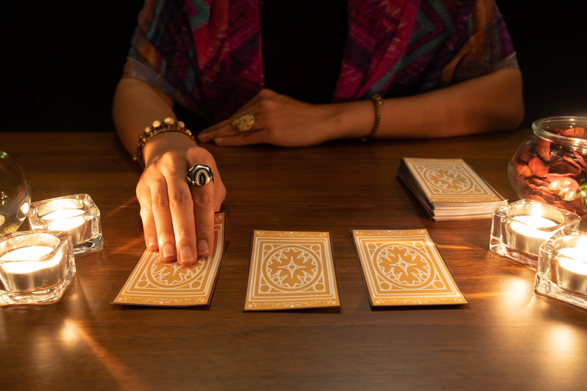

JYOTI TAROT READINGS

Welcome to our Tarot Reading website, where the mystical realm intertwines with your everyday life. Discover ancient wisdom, uncover hidden truths, and gain clarity through the power of Tarot. Our experienced readers are here to guide you on your personal journey, providing valuable insights and illuminating the path ahead. Whether you're seeking answers about love, career, or simply in need of spiritual guidance, let the Tarot cards serve as your trusted companion. Step into a world of magic and possibilities – your destiny awaits.
Book Appointment: +91-987654321
Our Reviews

I recently had a tarot reading with Jyoti and it was truly an incredible experience. Jyoti's wisdom and intuitive abilities shine through in her readings, providing deep insight and guidance. Her ability to connect with the cards and interpret their messages is remarkable. I left the reading feeling inspired, empowered, and with a renewed clarity about my path. I highly recommend Jyoti for anyone seeking a transformative and enlightening tarot reading.

I recently had a tarot reading with Jyoti and it was truly an incredible experience. Jyoti's wisdom and intuitive abilities shine through in her readings, providing deep insight and guidance. Her ability to connect with the cards and interpret their messages is remarkable. I left the reading feeling inspired, empowered, and with a renewed clarity about my path. I highly recommend Jyoti for anyone seeking a transformative and enlightening tarot reading.